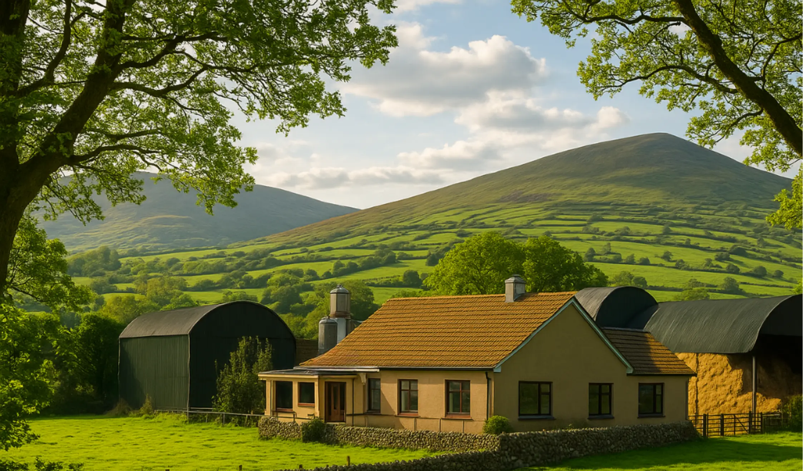

Prash’s story reminds us that sometimes we sit on hidden opportunities without ever opening the box. This reflection invites us to look closer at what we already have - skills, land, traditions, or ideas - and discover the value waiting to be unlocked.
View
Irish farming faces a generational challenge: with a third of farmers over 65 and many without a successor, succession planning has never been more urgent. This report explores the opportunities and solutions for a smoother, more innovative and sustainable future.
ViewWe’re planting something new.
We’re planting something new.